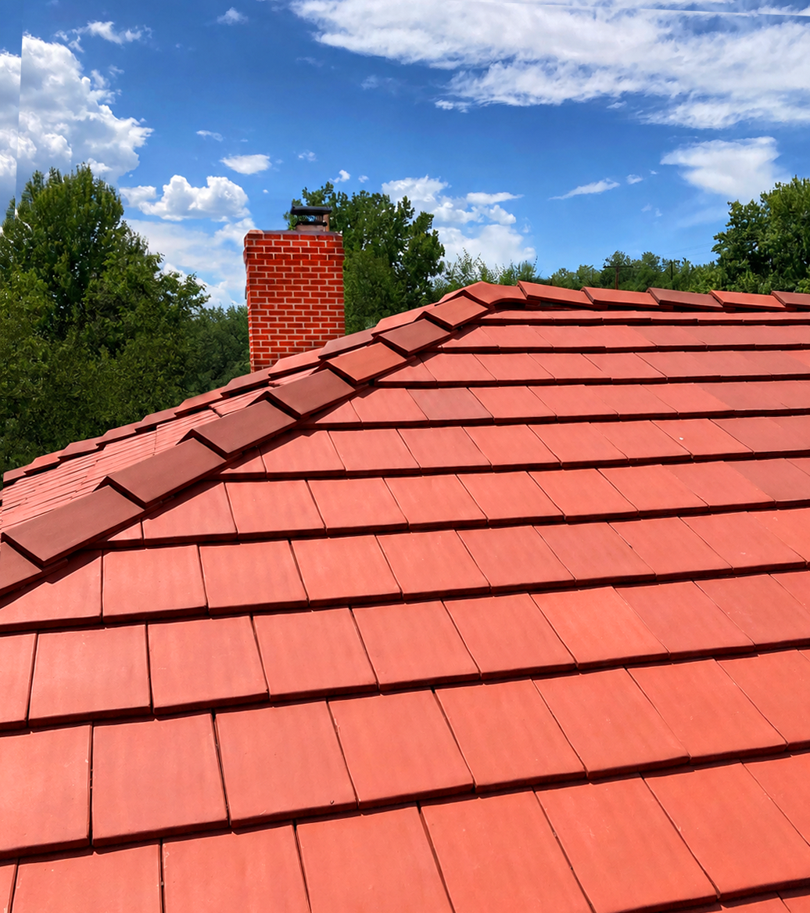

Completed Slate, Tile, and Copper Roofing Projects
Each entry includes material type, project scope, and notable preservation details. All photographs are from completed sites.
Recent Work
Click any image to expand. All projects were reviewed and accepted based on preservation or heritage-grade qualification criteria.

Vermont blend, random-pattern installation — quarry-matched green-gray and purple mix

English-profile terra cotta with copper box gutter — brick heritage building

Custom-fabricated copper saddle at stone chimney — S-profile clay tile field

Classic slate with period copper snow guards — installed to original spacing specification

Vermont blend — quarry-matched replacement integrated into existing field

Clay tile with in-place copper skylight flashing — custom-fabricated and soldered at site

Natural slate with period copper gutter — fascia and apron fabricated to original profile

Classic-profile natural slate — uniform coursing, heritage residential structure

French-profile clay tile — original tile profile documented and reinstated
Have a Preservation or Heritage-Grade Project?
Provide the building type, roof material, location, and required scope. We will confirm whether the project meets our acceptance criteria before scheduling.
Request a Consultation